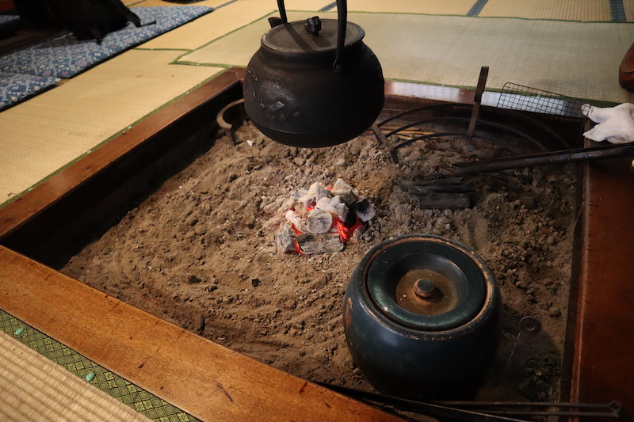
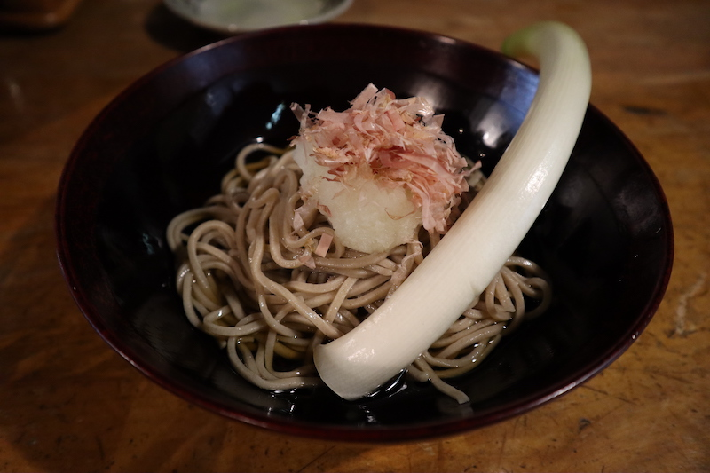

OUCHI-JYUKU HONJIN
The Honjin is a facility that is used for lodging and rest when high-ranking people such as daimyo, public residences, and government officials visit here to take part in shifts and patrols within the territory.
It is now a facility where you can experience the lives of people who lived here in the Edo period. There is no other place where the life of that time has been preserved so far, it will be a very valuable experience. Please come by all means.
SOBA-YA (MISAWAYA)
A soba-ya opened in the traditional l thatched-roof(茅葺屋根）building. The spacious dining room is with a good atmosphere. House signature dish is Takatou soba（高遠そば）which is an Aizu local specialty.
Takatou soba is served with a big Leek. One uses the leek as folk to eat soba. Meanwhile, you take a bite of the spicy “folk” at the same time. The soba is very al dente.
There are full of soba-ya in this tiny village of Ōuchi-juku. However, Misawaya is most popular and is crowded during dining hours.